Định tuyến Layer 2 (STP)
Mạng Layer 2 với Ethernet
Cho đến nay, chúng ta đã trình bày các giao thức Layer 2 hoạt động trên một liên kết duy nhất với nhiều máy tính được gắn vào nó, nhưng chúng ta có thể giới thiệu nhiều liên kết và xây dựng một mạng hoàn toàn bằng Layer 2. Các packet có thể được forwarding, và các máy thậm chí có thể chạy các giao thức định tuyến, tất cả đều sử dụng độc quyền các MAC address Layer 2.
Các giao thức định tuyến chúng ta chạy ở lớp IP cũng có thể hoạt động ở Layer 2, mặc dù một nhược điểm là chúng ta không thể tổng hợp các MAC address. Địa chỉ IP được phân bổ dựa trên địa lý, nhưng MAC address được phân bổ dựa trên nhà sản xuất, vì vậy không có cách nào rõ ràng để tổng hợp chúng. Nhược điểm này là lý do tại sao chúng ta không thể xây dựng Internet toàn cầu chỉ bằng Layer 2.
Nếu có nhiều liên kết trong một mạng cục bộ duy nhất, chúng ta sẽ phải đảm bảo rằng nếu ai đó broadcast một thông điệp, bất kỳ switch nào ở Layer 2 cũng sẽ chuyển tiếp packet ra khỏi tất cả các port (cổng) đi.
Multicast trở nên phức tạp hơn trong một mạng Layer 2 với nhiều liên kết. Cần có các giao thức bổ sung, sẽ được thảo luận sau (trong phần Chủ đề Đặc biệt).
Một ví dụ về multicast hữu ích trên mạng LAN là Bonjour/mDNS, một giao thức do Apple phát triển. Trong giao thức này, tất cả các thiết bị của Apple (ví dụ: iPhone, iPad, Apple TV) được mã hóa cứng để tham gia một nhóm đặc biệt trên mạng cục bộ. Nếu iPhone của bạn muốn tìm các thiết bị gần đó để phát nhạc (ví dụ: Apple TV, loa Apple hoặc HomePod hay bất cứ tên gọi nào của chúng), iPhone có thể multicast một thông điệp đến nhóm, hỏi xem có ai có thể phát nhạc không. Các thiết bị trong nhóm cũng có thể multicast phản hồi, nói rằng "Tôi là một Apple TV và tôi có thể phát nhạc." Điều thú vị là giao thức này thực sự cũng sử dụng DNS trong nhóm multicast để gửi SRV records, ánh xạ mỗi máy với các khả năng của nó.
Lưu ý lịch sử: Trong Internet hiện đại, chúng ta đã nói rằng các thuật ngữ "router" và "switch" có thể thay thế cho nhau. Bây giờ chúng ta đã có khái niệm về mạng Layer 2, chúng ta có thể nói rằng một switch chỉ hoạt động ở Lớp 1 và 2, trong khi một router hoạt động ở Lớp 1, 2 và 3.
Nếu bạn quay lại hình ảnh của chúng ta về việc đóng gói và mở gói các tiêu đề, chúng ta đã giả định rằng mọi router đều phân tích packet lên đến Layer 3, và chuyển tiếp packet đến router tiếp theo qua IP. Tuy nhiên, nếu chúng ta có một mạng Layer 2 với nhiều liên kết, một switch chỉ cần chuyển packet lên đến Layer 2 và chuyển tiếp packet đến switch tiếp theo qua Ethernet.
Ngày nay, hầu như tất cả các switch cũng triển khai Layer 3, đó là lý do tại sao chúng ta sử dụng các thuật ngữ này thay thế cho nhau. Về mặt lịch sử, Ethernet có trước Internet, đó là lý do tại sao có sự phân biệt giữa switch và router.
Cấu trúc liên kết Mạng Layer 2
Giống như chúng ta đã thấy trong đơn vị về định tuyến, có nhiều topology (cấu trúc liên kết) khác nhau mà chúng ta có thể sử dụng để kết nối các máy tính trong một mạng cục bộ.
Chúng ta có thể sử dụng một liên kết duy nhất để kết nối tất cả các máy tính, nhưng điều này không hiệu quả. Chúng ta chỉ có bandwidth (băng thông) của một liên kết duy nhất để sử dụng. Ngoài ra, mọi người cần phải đợi đến lượt mình để gửi tin nhắn, và nếu hai máy tính gửi tin nhắn đồng thời, có thể xảy ra collision.
Chúng ta cũng có thể sử dụng một full mesh (lưới đầy đủ), cung cấp cho mỗi cặp host một liên kết chuyên dụng, nhưng lại khó mở rộng.
Giống như ở Layer 3, chúng ta có thể giới thiệu các switch chuyển tiếp các packet qua một topology, hướng tới đích cuối cùng của chúng. Nhưng, cũng giống như ở Layer 3, điều này giới thiệu vấn đề định tuyến, nơi các switch cần phải quyết định nơi để chuyển tiếp các packet.
Trong phần này, chúng ta sẽ khám phá một số giao thức định tuyến được thiết kế đặc biệt cho các mạng Layer 2 cục bộ. Chúng ta cũng sẽ thấy một số thách thức ngăn cản các giao thức này được mở rộng và sử dụng cho mạng Layer 3 toàn cầu.
Chuyển tiếp bằng Flooding
Cách tiếp cận ngây thơ (naive approach) nhất để forwarding là flooding (gửi tràn lan) mọi packet bạn nhận được. Khi một switch nhận được một packet, nó sẽ gửi packet đó ra khỏi mọi port.
Như một tối ưu hóa nhỏ, chúng ta không cần gửi packet trở lại port mà chúng ta đã nhận packet từ đó.
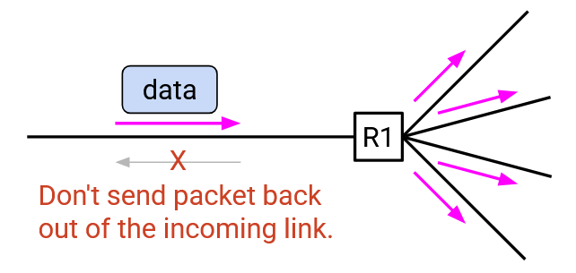Cách tiếp cận ngây thơ này có hai vấn đề lớn:
-
Nó lãng phí bandwidth. Các bản sao của packet được gửi một cách không cần thiết đến các switch và host không cần packet đó.
-
Flooding có thể khiến các packet bị lặp lại và làm quá tải mạng.
Learning Switches
Hãy bắt đầu với vấn đề đầu tiên: Flooding các packet làm lãng phí bandwidth.
Để giải quyết vấn đề này, chúng ta muốn điền vào các forwarding table (bảng chuyển tiếp) cho các switch, để chúng có thể chuyển tiếp các packet trực tiếp đến đích của chúng, thay vì flooding các bản sao của packet ra mọi hướng.
Chúng ta có thể chạy một thuật toán định tuyến để điền vào các forwarding table, nhưng một cách tiếp cận thậm chí còn đơn giản hơn là sử dụng learning switches (switch học).
Giả sử bạn là router R2. Bạn không có thông tin gì về topology mạng đầy đủ, và forwarding table của bạn trống rỗng. Bạn có các port ở phía bắc, nam, đông và tây.
Bạn thấy một packet đến từ port phía tây của bạn. Packet đó ghi: "Từ A, Đến B." Từ packet này, bạn có thể suy ra rằng A phải ở phía tây của bạn.
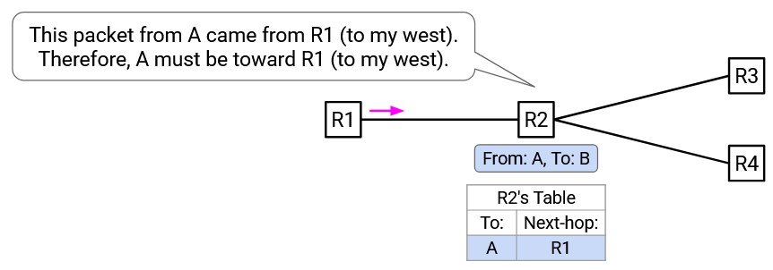Bây giờ bạn có thể thêm một mục vào forwarding table của mình: Các packet cho A nên được chuyển tiếp về phía tây.
Đây là ý tưởng chính đằng sau learning switches. Khi bạn nhận được một packet đến, bạn có một manh mối về vị trí của người gửi. Bạn có thể sử dụng thông tin đó để điền vào mục chuyển tiếp cho người gửi.
Lưu ý rằng packet đến không cho bạn biết bất cứ điều gì về vị trí của người nhận. Trong ví dụ trên, khi bạn nhận được "Từ A, Đến B" từ port phía tây, điều đó không cho bạn biết gì về vị trí của B (người nhận). Thay vào đó, bạn điền vào forwarding table cho A, để các packet trong tương lai cho A có thể được chuyển tiếp về phía tây.
Khi bạn nhận được nhiều packet đến hơn, bạn có thể bắt đầu điền vào forwarding table của mình với nhiều mục hơn. Nếu bạn nhận được một packet có đích không có trong forwarding table của bạn, bạn vẫn có thể chuyển tiếp packet bằng cách flooding nó ra tất cả các port (trừ port đến).
Ví dụ, khi bạn nhận "Từ A, Đến B" từ port phía tây, bạn chưa có forwarding table cho B. Do đó, bạn nên chuyển tiếp packet này ra tất cả các port (trừ port phía tây).
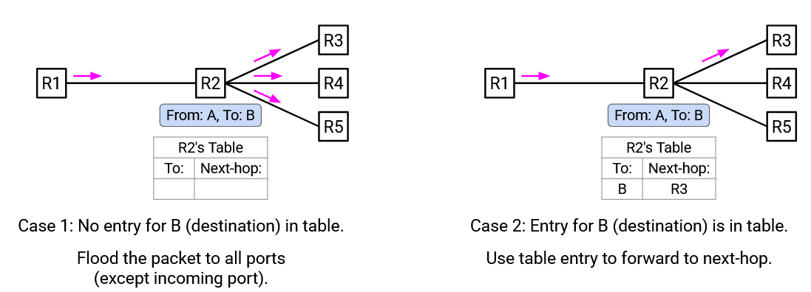Lưu ý: Không cần phải gửi packet trở lại port đến (ví dụ: phía tây), vì switch/host trước đó (ví dụ: ở phía tây của bạn) đã có một bản sao của packet và đã chuyển tiếp nó (đó là cách nó đến được bạn). Nếu bạn gửi packet trở lại, switch/host trước đó sẽ chỉ đưa ra quyết định chuyển tiếp tương tự một lần nữa (hoặc flooding lại, hoặc chuyển tiếp lại cho bạn), và việc chuyển tiếp lặp đi lặp lại này không giúp packet đến được đích của nó.
Tóm lại, learning switches có hai quy tắc để tuân theo:
-
Khi bạn nhận được một packet đến, hãy cập nhật forwarding table để liên kết người gửi với port đến.
-
Nếu đích có trong forwarding table của bạn, thì hãy chuyển tiếp packet đến chặng tiếp theo chính xác. Nếu không, hãy flooding packet ra tất cả các port trừ port đến.
Đây là một ví dụ về learning switches đang hoạt động. Hãy xem xét topology mạng này. Tất cả các switch đều là learning switches, và forwarding table của chúng bắt đầu trống.
A gửi một packet đến B. A chuyển tiếp packet đến R1.
R1 thấy packet "Từ A, Đến B" đến từ Port 1. Do đó, A phải ở hướng Port 1. R1 thêm ánh xạ này vào forwarding table của nó.
R1 không biết B ở đâu, vì vậy R1 flooding packet này ra tất cả các port (trừ port đến).

R2 và R4 đều nhận được packet "Từ A, đến B". Cả hai bây giờ đều có manh mối về vị trí của A, và thêm một ánh xạ cho A vào forwarding table của chúng. Cả hai đều không biết B ở đâu, vì vậy chúng flooding packet ra tất cả các port (trừ port đến).
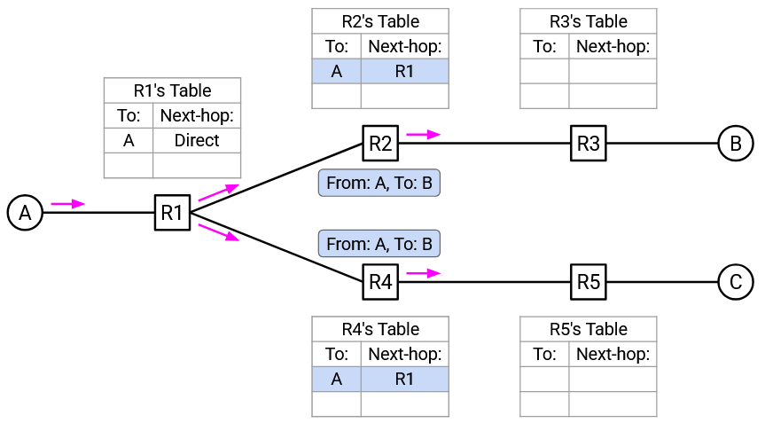R3 và R5 đều nhận được packet "Từ A, đến B". Cả hai bây giờ đều có manh mối về vị trí của A, và thêm một ánh xạ cho A vào forwarding table của chúng. Cả hai đều không biết B ở đâu, vì vậy chúng flooding packet ra tất cả các port (trừ port đến).
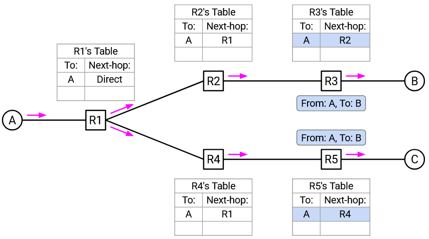C nhận được packet "Từ A, đến B". C kiểm tra tiêu đề và nhận ra rằng nó không phải là người nhận dự định của packet này, vì vậy C loại bỏ packet.
B nhận được packet "Từ A, đến B". B kiểm tra tiêu đề và nhận ra rằng nó là người nhận, vì vậy B nhận và xử lý thành công packet này.
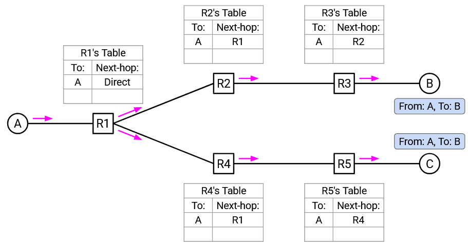Tiếp theo, giả sử B gửi một packet đến A. Đầu tiên, B chuyển tiếp packet đến R3.
R3 nhận được packet "Từ B, đến A". Điều này cho R3 một manh mối về vị trí của B, vì vậy R3 thêm một ánh xạ cho B vào forwarding table của nó. Ngoài ra, R3 nhận thấy rằng A có trong forwarding table của nó, vì vậy R3 có thể chuyển tiếp packet dọc theo chặng tiếp theo đến A (thay vì flooding packet).
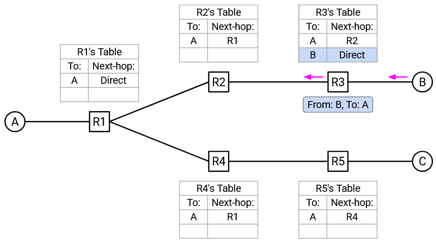R2 nhận được packet "Từ B, đến A". Điều này cho phép R2 thêm một ánh xạ cho B vào forwarding table của nó. R2 nhìn vào forwarding table của nó và thấy một mục cho A, vì vậy nó chuyển tiếp packet dọc theo chặng tiếp theo đến A.
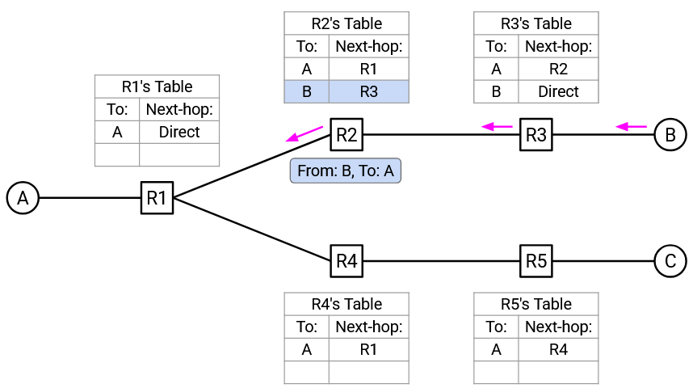R1 nhận được packet "Từ B, đến A". Điều này cho phép R1 thêm một ánh xạ cho B vào forwarding table của nó. R1 nhìn vào forwarding table của nó và thấy một mục cho A, vì vậy nó chuyển tiếp packet dọc theo chặng tiếp theo đến A.
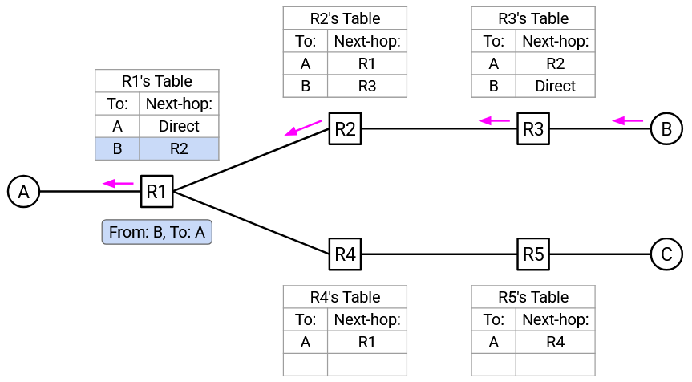Khi nhiều packet được gửi đi, nhiều mục hơn được thêm vào các forwarding table, và ít flooding hơn diễn ra.
Một tính năng cuối cùng chúng ta cần thêm vào: Khi một mục trong forwarding table được cài đặt, chúng ta gán cho nó một TTL (Time-to-Live - Thời gian sống). Nếu TTL hết hạn, mục đó sẽ bị xóa. Điều này cho phép các tuyến đường bị hỏng (ví dụ: do một liên kết, host, hoặc switch bị sập) hết hạn. Ví dụ, nếu B rời khỏi mạng trong ví dụ trên, TTL sẽ đảm bảo rằng tất cả các forwarding table cho B cuối cùng sẽ hết hạn.
Động lực của STP: Các Vòng lặp
Nhớ lại rằng flooding có hai vấn đề: Nó lãng phí bandwidth, và các loop (vòng lặp) có thể làm quá tải mạng. Learning switches đã giải quyết vấn đề đầu tiên, nhưng chúng không giải quyết được vấn đề loop.
Để thấy tại sao, hãy xem xét topology này với các loop. Giả sử tất cả các switch là learning switches, và tất cả các forwarding table bắt đầu trống. A cố gắng gửi một packet đến B, và chuyển tiếp packet đến R1.
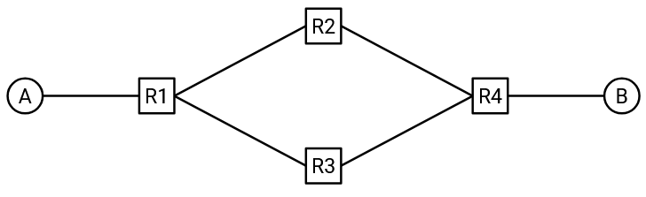R1 không có mục nào cho B, vì vậy nó flooding packet đến R2 (và R3).
R2 không có mục nào cho B, vì vậy nó flooding packet đến R4.
R4 không có mục nào cho B, vì vậy nó flooding packet đến R3.
R3 không có mục nào cho B, vì vậy nó flooding packet đến R1.
R1 không có mục nào cho B, vì vậy nó flooding packet đến R2, và chu kỳ tiếp tục.
Đồng thời, một bản sao của packet cũng đang di chuyển trong một loop theo hướng ngược lại: R1 ban đầu flooding đến R3, sau đó flooding đến R4, sau đó flooding đến R2, sau đó flooding đến R1, rồi flooding đến R3, tiếp tục chu kỳ.
Trong suốt quá trình này, các switch cài đặt các mục chuyển tiếp cho A, nhưng chúng không bao giờ nhận được bất kỳ mục nào cho B, vì vậy loop vô hạn không bao giờ được giải quyết. Không ai có mục chuyển tiếp cho B, vì vậy mọi người đều flooding packet khi họ nhận được nó.
Vấn đề này đôi khi được gọi là broadcast storm (bão quảng bá), vì mạng đang bị quá tải với lưu lượng broadcast.
Làm thế nào để chúng ta giải quyết vấn đề này? Lý tưởng nhất, chúng ta muốn "xóa" các liên kết dự phòng, để topology không có loop. Sau đó, cách tiếp cận learning switch sẽ hoạt động tốt, không có broadcast storm.
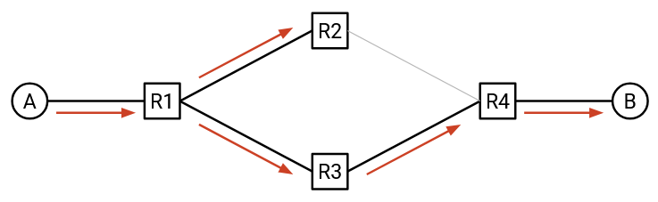Lưu ý: Một giải pháp khác có thể là thêm một trường TTL vào mỗi packet, để packet hết hạn sau khi được chuyển tiếp quá nhiều lần. Thật không may, tiêu đề Ethernet không có trường TTL, vì vậy giải pháp này không thể được triển khai.
Lưu ý: Một giải pháp khác có thể là loại bỏ các packet nếu bạn đã thấy chúng trước đây. Điều này sẽ yêu cầu đính kèm một loại dấu thời gian hoặc ID duy nhất cho mỗi packet. Một lần nữa, tiêu đề Ethernet không có trường tiêu đề cho việc này, vì vậy giải pháp này cũng không thể được triển khai.
STP: Bầu chọn một Root
Spanning Tree Protocol (STP) (Giao thức Cây bao trùm) giúp chúng ta vô hiệu hóa các liên kết, để topology kết quả không có loop. Điều này sẽ giúp chúng ta tránh được các broadcast storm.
Lưu ý rằng các host không tham gia vào giao thức này. Các router sẽ làm việc cùng nhau để vô hiệu hóa các liên kết và loại bỏ các loop khỏi topology. Do đó, chúng ta sẽ bỏ qua các host khi mô tả giao thức này.
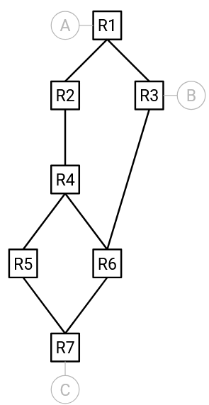STP quyết định vô hiệu hóa các liên kết nào bằng cách nào? Hãy bắt đầu bằng cách giải quyết vấn đề này với một cái nhìn toàn cục về mạng. Sau đó, chúng ta sẽ nghĩ về cách các switch trao đổi thông điệp để đạt được điều này, mà không cần một cái nhìn toàn cục về mạng.
Bước đầu tiên trong STP là bầu chọn một root switch (switch gốc), như sau:
Mỗi switch được gán một ID, bao gồm một giá trị ưu tiên (do người vận hành mạng đặt thủ công), và MAC address của switch.
Khi so sánh hai switch, switch có độ ưu tiên thấp hơn sẽ có ID thấp hơn. Nếu độ ưu tiên bằng nhau, thì switch có MAC address thấp hơn sẽ có ID thấp hơn.
Root switch là switch có ID thấp nhất.
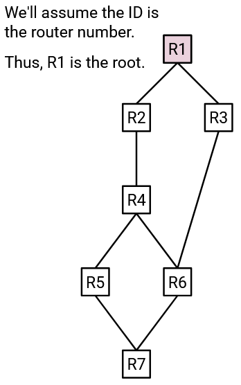Nếu người vận hành mạng muốn chọn một root cụ thể, họ có thể làm như vậy bằng cách đặt thủ công độ ưu tiên của các switch khác nhau. Hoặc, người vận hành có thể để tất cả các độ ưu tiên của switch ở giá trị mặc định, điều này sẽ khiến switch có MAC address thấp nhất được bầu làm root. Trong các ghi chú này, chúng ta sẽ không thảo luận về root nào là tốt nhất; điều quan trọng chỉ là một trong các router được chọn một cách rõ ràng làm root.
STP: Các Trạng thái Cổng
Bây giờ chúng ta đã có một root switch, chúng ta sẽ phân loại mọi port trên mọi switch thành một trong ba trạng thái:
-
Designated Port (Cổng chỉ định): Đây là các port hướng ra xa root (tức là chúng dẫn đến một nơi nào đó xa root hơn).
-
Root Port (Cổng gốc): Có một hoặc nhiều port hướng về phía root (tức là chúng dẫn đến một nơi nào đó gần root hơn). Trong số các port này, port nằm trên đường đi có chi phí thấp nhất đến root là root port.
-
Blocked Port (Cổng bị chặn): Tất cả các port hướng về phía root, không phải là root port (cách tốt nhất để đến root), là các blocked port.
Dưới đây là một số ví dụ về các trạng thái port đang hoạt động. Giả sử rằng các ID được sắp xếp theo nhãn của router. Điều này có nghĩa là R1 có ID thấp nhất, vì vậy nó được bầu làm root switch.
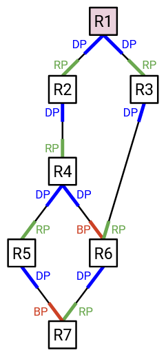Tất cả các port trên root switch (R1) đều hướng ra xa root, vì vậy chúng đều là các designated port.
R2 có hai port. Chỉ có một trong số chúng hướng về phía root, vì vậy đó phải là con đường tốt nhất đến root. Do đó, port hướng lên của R2 được dán nhãn là một root port.
Port còn lại tại R2 hướng ra xa root, vì vậy port hướng xuống của R2 được dán nhãn là một designated port.
R6 có ba port. Port hướng xuống hướng ra xa root, vì vậy nó là một designated port.
Tại R6, các port đến R4 và R3 đều hướng về phía root. Tuy nhiên, port đến R3 cung cấp đường đi có chi phí thấp nhất đến root (chi phí 2), trong khi port đến R4 cung cấp một đường đi tệ hơn đến root (chi phí 3). Do đó, chúng ta dán nhãn port đến R3 là root port (cách tốt nhất để đến root), và port đến R4 là một blocked port (hướng về root, nhưng không phải là đường đi tốt nhất).
Đôi khi, chúng ta có một sự hòa, và có hai cách tốt nhất để đến root.
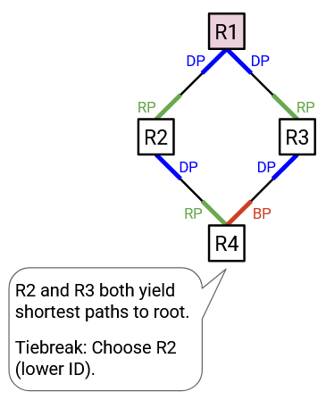Ví dụ, tại R4, cả port đến R2 và port đến R3 đều hướng về phía root, và cả hai đều cung cấp một đường đi chi phí 2 đến root. Trong trường hợp hòa, chúng ta sẽ nói rằng chặng tiếp theo có ID thấp hơn là đường đi tốt hơn đến root. Điều này làm cho port đến R2 trở thành root port, và port đến R3 trở thành một blocked port.
Đôi khi, chúng ta sẽ có một liên kết dẫn đến một nơi nào đó cách root một khoảng bằng nhau.
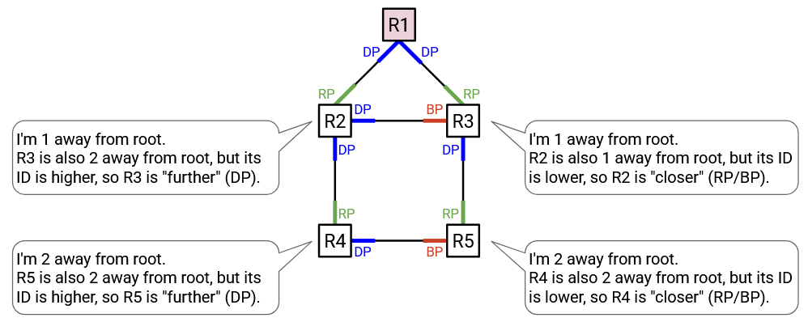Ví dụ, R4 cách root một khoảng cách 2, và nó có một liên kết đến R5, cũng cách root một khoảng cách 2. Một lần nữa, chúng ta sẽ sử dụng ID của router làm yếu tố phá vỡ thế hòa. Nếu liên kết dẫn đến một router có ID cao hơn, chúng ta sẽ nói rằng liên kết đó hướng ra xa root. Nếu liên kết dẫn đến một router có ID thấp hơn, chúng ta sẽ nói rằng liên kết đó hướng về phía root. Trong ví dụ này, port hướng sang phải của R4 hướng ra xa root (dẫn đến một nơi nào đó cùng khoảng cách, nhưng ID cao hơn), vì vậy nó là một designated port. Mặt khác, port hướng sang trái của R5 hướng về phía root (dẫn đến một nơi nào đó cùng khoảng cách, nhưng ID thấp hơn), vì vậy nó là một root port hoặc một blocked port.
STP: Vô hiệu hóa các Liên kết
Bây giờ mỗi port đã được gán một trạng thái (designated port, root port, hoặc blocked port), chúng ta sẵn sàng loại bỏ các loop khỏi topology mạng.
Để loại bỏ các loop, mỗi switch chỉ cần giả vờ như các blocked port của nó không tồn tại. Nói cách khác, không gửi bất kỳ dữ liệu người dùng nào ra khỏi port đó, và không nhận bất kỳ dữ liệu người dùng nào từ port đó.
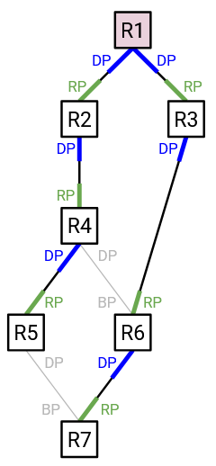(Lưu ý: Chúng ta chỉ định dữ liệu người dùng ở đây vì các packet STP vẫn có thể được gửi và nhận từ blocked port. Điều này sẽ cho phép STP kích hoạt lại blocked port nếu topology thay đổi.)
Nếu chúng ta ngừng gửi dữ liệu người dùng dọc theo các blocked port, thì bất kỳ liên kết nào có blocked port cuối cùng sẽ bị vô hiệu hóa.
Tại sao điều này lại hoạt động? Hãy nghĩ về nó từ góc độ của một switch cụ thể. Root port của bạn là cách tốt nhất để bạn đến root. Các blocked port của bạn cũng hướng về phía root, nhưng chúng không phải là con đường tốt nhất đến root. Điều này có nghĩa là blocked port thực sự tạo ra một con đường dự phòng (nhưng tệ hơn) đến root, vì vậy chúng ta nên vô hiệu hóa liên kết đó.
Một mối lo ngại bạn có thể có là: Điều gì sẽ xảy ra nếu bạn chặn một port, nhưng ai đó khác cần sử dụng liên kết bị vô hiệu hóa đó để chuyển tiếp các packet đến bạn, trên đường đến root của họ? May mắn thay, điều này sẽ không bao giờ xảy ra. Hãy nhớ rằng blocked port của bạn hướng về phía root (tức là bạn ở xa hơn, và phía bên kia gần root hơn bạn). Do đó, nếu switch ở phía bên kia (gần hơn) chuyển tiếp các packet đến bạn (xa hơn), chúng sẽ chuyển tiếp các packet ra xa root. Điều này có nghĩa là chúng ta có thể chặn port này một cách an toàn và vô hiệu hóa liên kết này mà không cần lo lắng về việc các switch khác cố gắng sử dụng liên kết đó như một phần của con đường đến root của họ.
Ngược lại, các liên kết chỉ định không thể bị vô hiệu hóa một cách an toàn, bởi vì chúng dẫn ra xa root (tức là switch ở phía bên kia ở xa root hơn bạn). Switch ở phía bên kia có thể thực sự muốn chuyển tiếp các packet đến bạn, bởi vì bạn đang nằm trên con đường tốt nhất của họ đến root. May mắn thay, đây cũng không phải là vấn đề. Mặc dù bạn không thể vô hiệu hóa liên kết này một cách an toàn, bạn có thể dựa vào switch ở phía bên kia để vô hiệu hóa liên kết nếu họ không cần nó. Switch ở phía bên kia ở xa hơn bạn, vì vậy họ sẽ hoặc giữ liên kết này nếu đó là con đường tốt nhất của họ đến root (tức là root port), hoặc họ sẽ vô hiệu hóa liên kết này nếu đó không phải là con đường tốt nhất của họ đến root (tức là blocked port).
Với chiến lược này, mỗi liên kết chỉ bị vô hiệu hóa bởi một bên. Bên ở xa hơn đặt câu hỏi: Tôi có đang sử dụng liên kết này làm con đường tốt nhất của mình đến root không? Nếu có, port của liên kết này là một root port. Nếu không, port của liên kết này là một blocked port.
Bên ở gần hơn luôn làm cho port của liên kết này trở thành một designated port. Điều này có tác dụng để lại quyết định vô hiệu hóa cho bên ở xa hơn. Điều này tốt, bởi vì bên ở gần hơn không biết liệu bên ở xa hơn có đang sử dụng liên kết này làm con đường tốt nhất của họ đến root hay không.
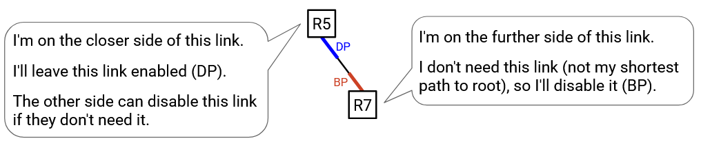STP: Các Cổng Chỉ định
Lưu ý bên lề: Tại sao chúng ta gọi chúng là các designated port? Cho đến nay, chúng ta đã vẽ các mạng nơi mỗi liên kết kết nối hai máy, nhưng hãy nhớ rằng đôi khi chúng ta có thể có các liên kết kết nối nhiều máy tính.
Giả sử rằng một liên kết kết nối hai switch cũng có rất nhiều host được kết nối với nó. Nếu các host này muốn gửi hoặc nhận dữ liệu, họ sẽ gửi dữ liệu đến designated port, chứ không phải blocked port. (Blocked port sẽ không nhận bất kỳ dữ liệu người dùng nào.) Điều này đảm bảo rằng dữ liệu của họ chỉ đi một con đường duy nhất đến đích. Nếu dữ liệu được gửi đến cả designated port và blocked port, dữ liệu có thể đi hai con đường đến đích, tạo ra một loop.
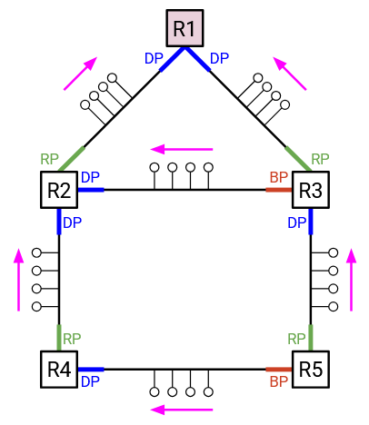Với điều này trong tâm trí, một cách diễn giải tương đương khác của một designated port là: Các host trên một liên kết nên gửi dữ liệu về phía designated port để đến root (hoặc bất cứ nơi nào khác trên cây bao trùm). Từ góc độ của switch, designated port hướng ra xa root. Từ góc độ của các host, việc gửi đến designated port đưa họ đến gần root hơn (hoặc bất cứ nơi nào khác trên cây bao trùm).
STP: Trao đổi BPDU
Bây giờ chúng ta đã biết cách sử dụng STP để vô hiệu hóa các liên kết và loại bỏ các loop khỏi một topology mạng. Tuy nhiên, giao thức của chúng ta cho đến nay giả định kiến thức toàn cục về mạng. Bạn sẽ cần một cái nhìn toàn cục để xác định root, và để quyết định xem các port hướng về phía hay ra xa root.
Để các switch có thể học được thông tin cần thiết để dán nhãn cho các port của mình, các switch trao đổi các thông điệp được gọi là Bridge Protocol Data Units (BPDUs) (Các đơn vị dữ liệu giao thức cầu nối). Chúng khá giống với các thông điệp định tuyến mặt phẳng điều khiển mà chúng ta đã trao đổi trong các giao thức định tuyến khác, nhưng với một cái tên hoa mỹ. Lưu ý rằng các thông điệp mặt phẳng điều khiển này khác biệt với các packet người dùng mặt phẳng dữ liệu (dữ liệu thực tế mà chúng ta đang chuyển tiếp).
Khi giao thức bắt đầu, mỗi switch đều nghĩ rằng root là chính nó, và chi phí đến root (chính nó) là 0.
Khi giao thức chạy, mỗi switch theo dõi những gì nó nghĩ là root, và con đường tốt nhất đã biết đến root đó (và chi phí của con đường đó).
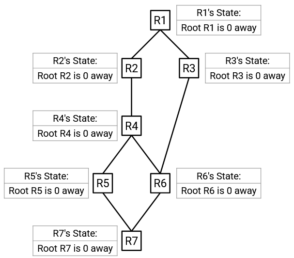Khi bạn gửi một BPDU, bạn bao gồm hai mẩu thông tin: Bạn nghĩ root là ai, và bạn cách root bao xa. Ví dụ, một BPDU có thể nói: "Root là R2, và tôi có thể đến R2 với chi phí 7."
Khi bạn nhận được một BPDU, bạn kiểm tra xem nó có thông tin nào "tốt hơn" không. BPDU có thể tốt hơn vì hai lý do:
-
Root trong BPDU có ID thấp hơn. Điều này có nghĩa là bạn đã khám phá ra một root tốt hơn. Bạn nên từ bỏ root và chi phí hiện tại của mình, và thay vào đó chấp nhận root mới và con đường đến root mới.
-
Root trong BPDU là như nhau, nhưng BPDU đang cung cấp một con đường tốt hơn đến root. Bạn nên chấp nhận con đường mới đến root.
Chi phí đến root được tính toán giống như chúng ta đã làm trong distance-vector protocol (giao thức vector khoảng cách). Ví dụ, giả sử neighbour của bạn nói với bạn "Root là R2, và tôi có thể đến R2 với chi phí 7." Thì chi phí của bạn đến root là chi phí liên kết trực tiếp của bạn đến neighbour, cộng với chi phí của neighbour đến root (như được chỉ định trong advertise).
Khi bạn cập nhật trạng thái của mình (bạn nghĩ root là ai, hoặc chi phí tốt nhất đã biết của bạn đến root), bạn nên gửi một BPDU đến các neighbour của mình để thông báo cho họ về trạng thái mới của bạn.
Một khi giao thức hội tụ, trạng thái sẽ cung cấp cho mỗi switch đủ thông tin để dán nhãn cho tất cả các port của nó. Bạn biết con đường tốt nhất đến root, vì vậy bạn có thể dán nhãn cho port tương ứng là root port.
Các neighbour của bạn cũng đã nói cho bạn biết họ cách root bao xa. Nếu một neighbour nói rằng họ ở xa hơn, thì bạn có thể dán nhãn cho port tương ứng là một designated port. Nếu một neighbour nói rằng họ ở gần hơn (nhưng họ không nằm trên con đường tốt nhất của bạn đến root), thì bạn có thể dán nhãn cho port tương ứng là một blocked port.
Các BPDU được trao đổi thường xuyên, để nếu topology mạng thay đổi, giao thức có thể thích ứng và tìm ra một cây bao trùm (tức là vô hiệu hóa các liên kết) cho topology mới.
STP: Ví dụ về Trao đổi BPDU
Các router gửi và nhận các trao đổi BPDU song song, vì vậy không có một router cụ thể nào gửi BPDU đầu tiên. Trong ví dụ này, chúng ta sẽ hiển thị một tập hợp con của các BPDU được gửi đi.
Trạng thái ban đầu của R3 nói: Root R3 cách 0. Quảng cáo đầu tiên của R3 gửi trạng thái này đến các neighbour của nó.

R1 nghe thấy advertise này. R1 hiện đang nghĩ root là R1, và advertise cung cấp một root là R3. Root được advertise tệ hơn (ID cao hơn), vì vậy R1 từ chối advertise này.
R6 nghe thấy advertise này. R6 hiện đang nghĩ root là R6, và advertise này cung cấp một root là R3. Root được advertise tốt hơn, vì vậy R6 chấp nhận advertise này. Trạng thái cập nhật của R6 nói: Root R3 cách 1. Lưu ý: Chi phí được tính từ 0, chi phí trong advertise từ R3, cộng với 1, chi phí của liên kết đến R3.
Tại thời điểm này, R6 đã cập nhật trạng thái của mình, vì vậy nó sẽ gửi một advertise đến các neighbour của mình (không được hiển thị trong bản demo này).
Một thời gian sau, R1 gửi một advertise đến các neighbour của nó với trạng thái của nó: Root R1 cách 0.
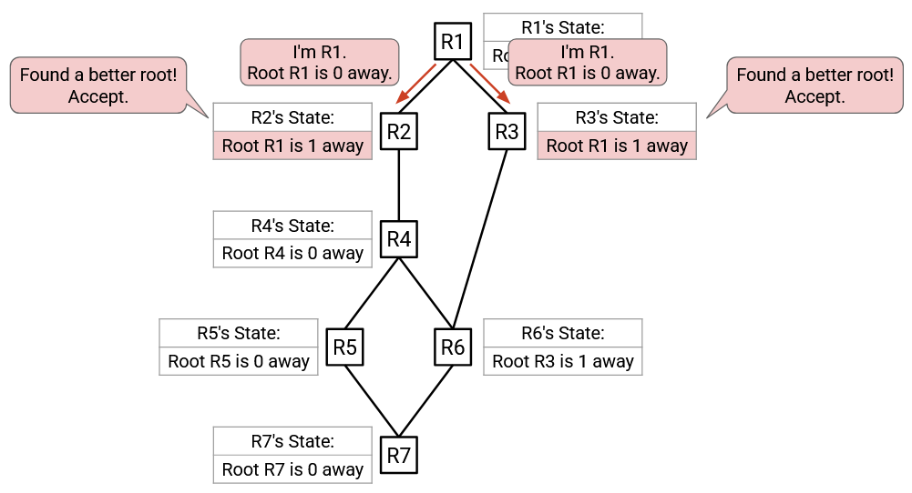R2 nghe thấy advertise này. Root được advertise (R1) tốt hơn root hiện đang được biết đến tốt nhất (R2), vì vậy R2 chấp nhận advertise này. Trạng thái cập nhật của R2 nói: Root R1 cách 1.
Tương tự, R3 nghe thấy advertise này, và chấp nhận nó vì root được advertise (R1) tốt hơn root hiện đang được biết đến tốt nhất (R3). Trạng thái cập nhật của R3 nói: Root R1 cách 1.
R2 và R3 đã cập nhật trạng thái của chúng, vì vậy mỗi cái sẽ gửi một advertise đến các neighbour của chúng.
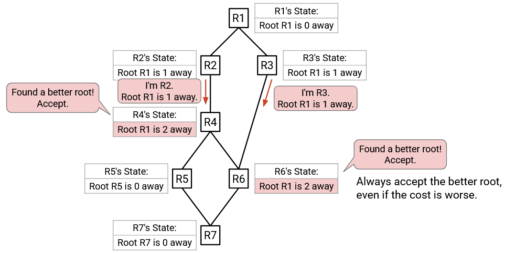R4 nghe thấy advertise từ R2. Root được advertise (R1) tốt hơn root hiện đang được biết đến tốt nhất (R4), vì vậy R4 chấp nhận advertise này. Trạng thái cập nhật của R4 nói: Root R1 cách 2. Lưu ý: Chi phí này được tính bằng cách cộng 1 (chi phí trong advertise từ R2), cộng với 1 (chi phí liên kết đến R2).
R6 nghe thấy advertise từ R3. Root được advertise (R1) tốt hơn root hiện đang được biết đến tốt nhất (R3), vì vậy R6 chấp nhận advertise này. Trạng thái cập nhật của R6 nói: Root R1 cách 2. Lưu ý: Trạng thái cũ của R6 nói R3 cách 1, và trạng thái mới nói R1 cách 2. Mặc dù trạng thái mới có khoảng cách cao hơn, nó vẫn tốt hơn vì trạng thái mới có một root tốt hơn.
R4 và R6 đã cập nhật trạng thái của mình, vì vậy chúng sẽ gửi advertise đến các neighbour của mình với trạng thái cập nhật của mình. Chúng ta sẽ xem advertise của R4 trước, sau đó quay lại R6 sau (một lần nữa, hãy nhớ rằng tất cả những điều này đang diễn ra song song trong thực tế).
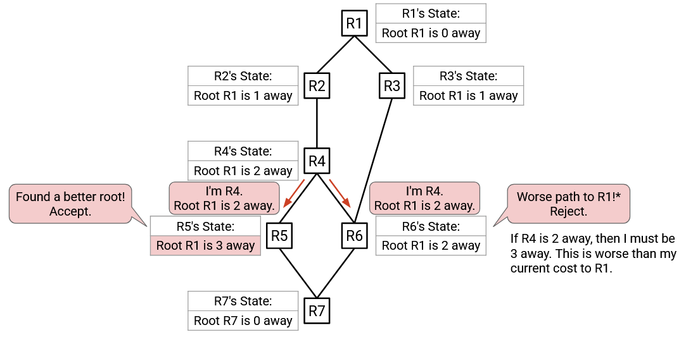R5 nghe thấy advertise từ R4. Root được advertise (R1) tốt hơn root hiện đang được biết đến tốt nhất (R5), vì vậy R5 chấp nhận advertise này. Trạng thái cập nhật của R5 nói: Root R1 cách 3 (2 từ advertise, cộng 1 từ chi phí liên kết đến R4).
R6 cũng nghe thấy advertise từ R4. Root được advertise (R1) giống như root hiện đang được biết đến tốt nhất (R1), vì vậy chúng ta cần kiểm tra chi phí. Chấp nhận advertise sẽ cho chi phí là 2 (từ advertise), cộng với 1 (từ chi phí liên kết đến R4), tổng cộng là 3. Chi phí tốt nhất hiện đang được biết đến là 2. Do đó, R6 từ chối advertise (3 tệ hơn 2).
R5 đã cập nhật trạng thái của mình, vì vậy nó sẽ gửi một advertise đến các neighbour của mình với trạng thái cập nhật của mình.
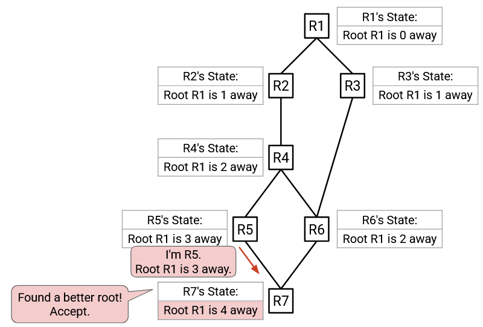R7 nghe thấy advertise từ R5. Root được advertise (R1) tốt hơn root hiện đang được biết đến tốt nhất (R7), vì vậy R7 chấp nhận advertise này.
R7 đã cập nhật trạng thái của mình, và sẽ gửi một advertise đến các neighbour của mình, mặc dù advertise đó không được hiển thị ở đây (R6 sẽ từ chối nó vì có chi phí đến root tệ hơn).
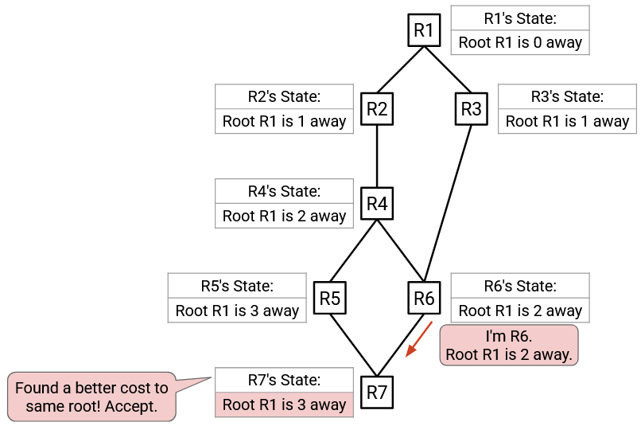Tiếp nối từ trước đó, R6 gửi một advertise đến các neighbour của nó, và R7 nhận được advertise này. Root được advertise (R1) giống như root hiện đang được biết đến tốt nhất (R1), vì vậy chúng ta cần kiểm tra chi phí. Chấp nhận advertise sẽ cho chi phí là 2 (từ advertise), cộng với 1 (từ chi phí liên kết đến R6), tổng cộng là 3. Chi phí tốt nhất hiện đang được biết đến là 4. Do đó, R7 chấp nhận advertise (3 tốt hơn 4), và cập nhật trạng thái của mình để có chi phí đến root là 3 (thay vì 4).
Các router tiếp tục trao đổi advertise định kỳ với nhau. Không phải tất cả các advertise đều được hiển thị trong bản demo này, nhưng cuối cùng, giao thức sẽ hội tụ, và tất cả các router sẽ biết rằng root là R1. Ngoài ra, tất cả các router sẽ biết về chi phí của chúng đến root.
Các router tiếp tục trao đổi advertise định kỳ với nhau. Không phải tất cả các advertise đều được hiển thị trong bản demo này, nhưng cuối cùng, giao thức sẽ hội tụ, và tất cả các router sẽ biết rằng root là R1. Ngoài ra, tất cả các router sẽ biết về chi phí của chúng đến root.
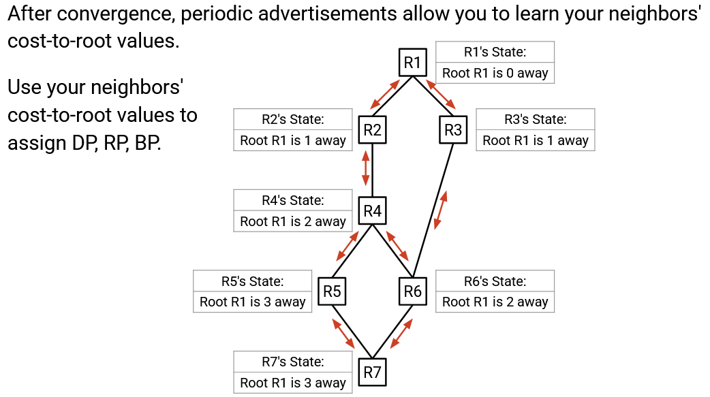Một khi tất cả các router biết chi phí của chúng đến root đã được thống nhất, chúng có thể trao đổi các advertise định kỳ. Điều này cho phép các router tìm hiểu về giá trị chi phí đến root của các neighbour, điều này lần lượt cho phép các router gán các port là DP, RP, hoặc BP.